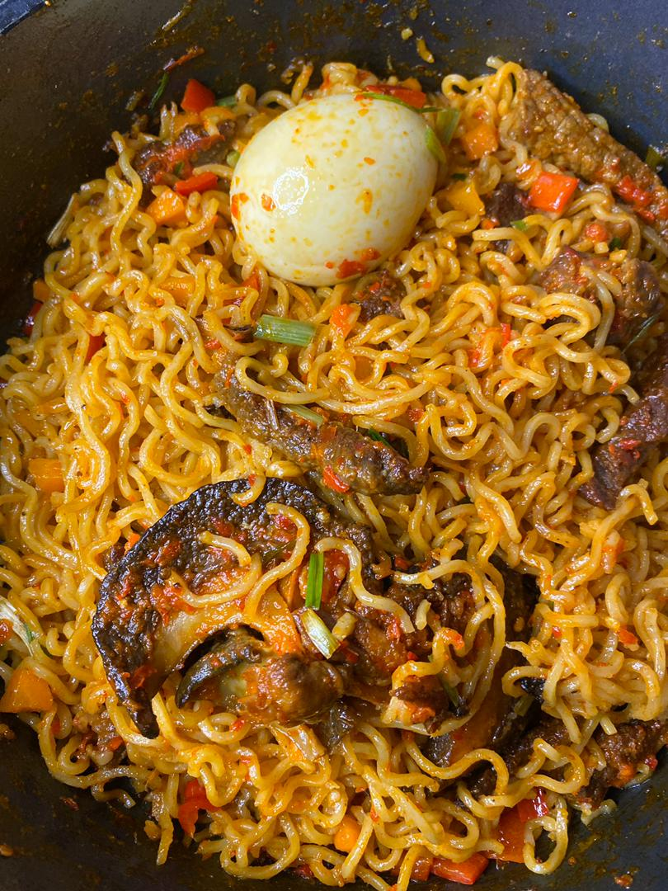

Noodles with Egg

Description
Jollof rice is one of the most common dishes in West Africa. There are several regional variations in name and ingredients; for example, in Mali it is called zaamè in Bamanankan. The dish's most common name of Jollof derives from the name of the Wolof people, though in Senegal and Gambia the dish is referred to in Wolof as ceebu jën or benachin. In French-speaking areas, it is called riz au gras. Despite the variations, the dish is "mutually intelligible" across the regions and has become the best known African dish outside the continent.
Ingredients
- 250 gm parboiled fresh noodles
- 1 cup chopped,grated cabbage
- 1 cup sliced onion
- 2 teaspoon powdered black pepper
- 2 tablespoon sunflower oil
- 3 teaspoon garlic paste
- 3 egg
- 1 cup finely chopped bean
- 1 cup grated carrot
- 7 sliced green chilli
- salt as required
- 3 teaspoon ginger paste
- 1 teaspoon ajinomoto
- 2 tablespoon soy sauce
Steps
- To make this easy recipe, begin with par-boiling the noodles. Once done, drain the excess water and keep it aside. In the meantime, heat a pan over a medium flame. Once the oil is sufficiently hot, add the ginger-garlic paste and fry for some time. If you like to make it more delicious, add some finely chopped green chillies. You can also use chillies soaked in vinegar.
- Then add the onions, beans and green chillies in the same pan and saute for a minute or two. Add the carrots, cabbage, salt, pepper powder, soy sauce and Ajinomoto. Stir-fry the ingredients for some time. Once done, add the boiled noodles and break the eggs into the pan. Mix well and cook for a few minutes. If you like smoky flavours, stir the veggies mix on a high flame.
- Cover the pan with a lid and allow it to cook for around 2-3 minutes. Once done, transfer the dish to a serving bowl and garnish it with coriander leaves. Serve hot and pair it with a spicy gravy of your choice. Make sure you try this recipe, rate it and let us know how it turned out to be.